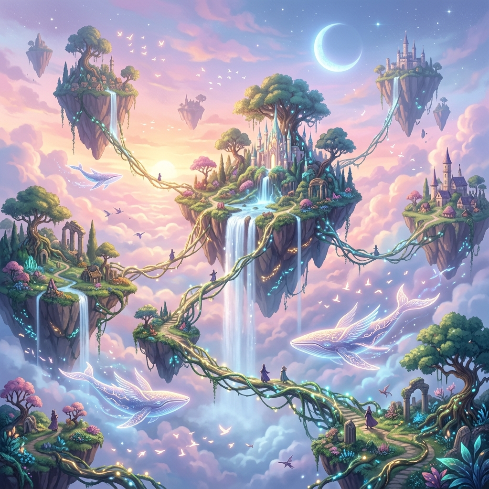
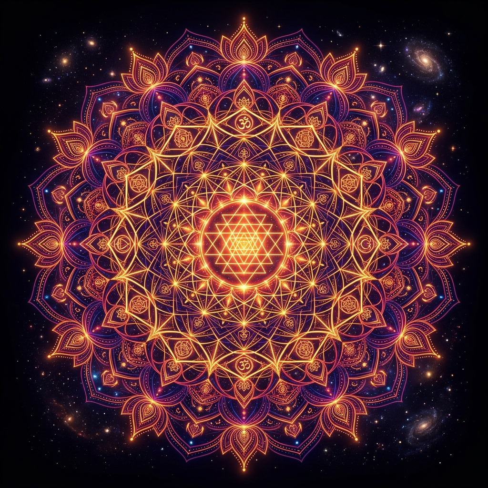
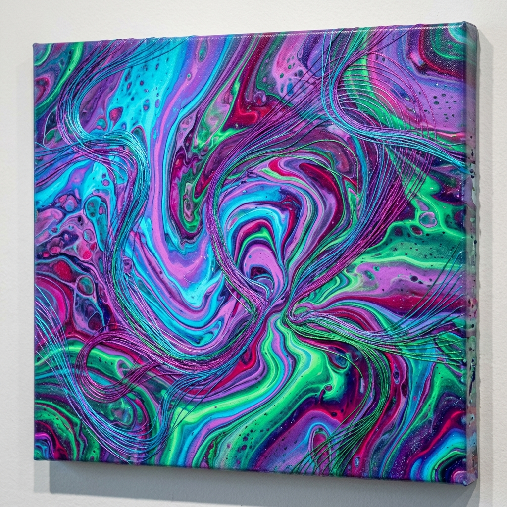

MANOJ
SRIDHAR
AI Creative Technologist / Generative Designer / Ambient Sound Producer
Blending engineering systems, prompt architecture, and deep sensory flow to create the next generation of visual and auditory storytelling.
The Creative Technologist
Bridging Art and Engineering
I specialize in creating custom systems that fuse deep human aesthetics with advanced generative models. My background in automotive systems engineering gives me a structured, logical methodology, while my active painting practice and sound design wing (SonicScapes) allow me to create multi-sensory visual narratives.
Through 7+ years of building, I have designed infotainment UX modules for luxury vehicles (Maserati), optimized generative workflows for tech giants (Adobe Contract), published coloring journals, and engineered high-throughput image and video automation pipelines.
Measurable Impact
Four Pillars of Design
Generative AI Systems
Advanced pipeline scaling utilizing Stable Diffusion, ComfyUI nodes, custom LoRA model training, and custom Adobe Firefly model architectures.
- Node-based image generation
- Prompt logic development
- Automated visual assets
SonicScapes Production
Auditory journeys combining electronic ambient textures, binaural sound fields, and mantra-infused layers synced to psychedelic visualizer arts.
- Ambient sound design
- Original YouTube music pipelines
- Multi-platform releases
Abstract & Sacred Art
Fluid pouring art, detailed thread painting, vector illustrations in Illustrator, and geometric Mandalas designed to bridge digital and physical worlds.
- Acrylic pouring canvasses
- Sacred geometry drawings
- Global print e-commerce
Creative Engineering
Systems-level wireframing and user stories. Experience prototyping rapid frontend interfaces using Vercel, Cursor, and AI-assisted Vibe coding.
- Automotive UX wireframes
- Vibe-coded React apps
- Agile requirement design
Story-to-Video AI Workflow
I map and engineer complex creative logic into reliable, linear workflows that combine storytelling with automated media generation. Click the steps to navigate the pipeline.
Input Story & Concept Genesis
Every immersive video begins as a central philosophical, spiritual, or psychedelic narrative. Themes are laid out focusing on mantra layers, sacred geometry concepts, or surreal world-building constructs.
Story Breakdown & Scene Segmentation
Structuring the story into separate scene logs. We define clear timing parameters, camera movements, moodboards, and specific focal transitions to ensure the visual elements flow like traditional canvas brushstrokes.
Text-Image Prompt Architecture
Designing advanced, syntax-focused prompting strings. Blending precise physical descriptions (lighting, camera depth, environment) with artistic styling tokens to instruct ComfyUI and Stable Diffusion engines accurately.
Image-to-Video Visual Prompting
Injecting motion vectors. Directing temporal consistencies and camera pans utilizing state-of-the-art tools like Adobe Firefly Video, Google Veo3, or RunwayML, transforming static generative art into fluid organic cinema.
High-Quality Media Asset Generation
Batch rendering processes. Generating multiple visual assets concurrently with consistent character designs, color gradings, and high resolution scaling configurations through dedicated model outputs.
Audio & Voiceover Generation
This is where SonicScapes comes to life. Original synthesizers, rhythmic sound effects, and healing frequency tracks are composed and matched to the scene cues to produce complete auditory-visual synthesis.
Assembly, Master Editing & Final Export
Combining video grids, soundscapes, and text layers in Premiere Pro. Refining transitions, adjusting color tones, and mastering audio for optimal streaming output on YouTube and Vercel.
Interactive Art & Design Gallery



Professional Experience
Creative Consultant — AI / Generative Systems
PANFISH
Supercharged AI image and video pipelines achieving a 35-50% improvement in visual output quality. Formulated prompt engineering frameworks that reduced design iterations by 40%. Delivered feedback to Adobe developers for improving Firefly model integration.
Senior Graphic Designer
CIFDAQ
Designed 50+ optimized visual assets for extensive marketing campaigns in Dubai. Increased social engagement by 20-30% via visually aligned creatives, and established robust UI/UX wireframe assets reducing iterations.
Senior Graphic Designer
SIRMA INDIA
Steered end-to-end design implementations for 50+ client projects spanning digital interfaces, brochures, and brand identities. Mentored junior design pods, improving general throughput by 30% and streamlining design cycles.
Requirements Designer — UX / System Design
HARMAN International
Engineered requirement documentation and high-level user stories for luxury automotive client infotainment systems (Maserati & Fiat Chrysler). Streamlined documentation rework workflows by 25%.
Product Design Engineer
Volvo Buses India
Coordinated product validation, custom mapping and mechanical layouts for Volvo-UD BRTS bus models and tarmac low-floor coaches in Pune and Ahmedabad.
E-Commerce & Digital Portals
Access my creations across official galleries, global merchandise stores, music platforms, and publications.
SonicScapes Streams
Immerse yourself in deep ambient synthesizer and soundscapes releases.
Art & Merch Store
Purchase high-quality physical canvas prints, apparel, and lifestyle accessories.
Mandala Publications
Discover my printed Mandala Coloring Books, bridging traditional arts with tactile therapy.
Start a Collaboration
Let's Build Something Crazy
Have an AI production pipeline to build, a visual campaign to direct, or interested in licensed ambient audio integrations for digital media?